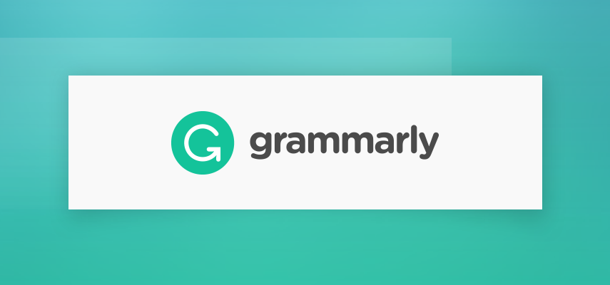
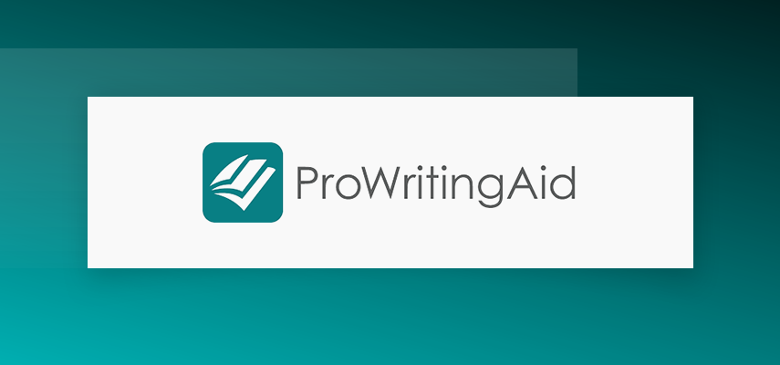

Best Grammar Correction Software
Josephine Nguyen | Updated on February 12th 2024Content Manager & Graphic Design Specialist In a hurry? Here’s the top Grammar Correction App for 2025:
Compose clear, engaging, polished, and error-free writing.
You spent a good time making sure your mass email is perfect before sending it off to your list. Half an hour later, Ms. Know-It-All from the marketing department replied to point out several typos, grammatical errors, and spelling mistakes. Like a true proofreader wanna-be, she quipped:
- "Irregardless" is not a word; it should be "regardless."
- "Percieve" is spelled as "perceive."
- People don't say "worse comes to worse"; it should be "worse comes to worst."
- You're using commas, apostrophes, and punctuations wrong.
Ugh. Kill me now. Okay, maybe no one's that evil. However, I think we all can relate to making a grammar mistake so embarrassing we wished we could crawl into a hole and disappear. More than just the awkward moments and a few peals of laughter, poor grammar can say a lot of things about you: it can make you look uneducated and incompetent.
In a blog post for Harvard Business Review, co-founder and CEO of iFixit said that he wouldn't hire people who use poor grammar. "If you think an apostrophe was one of the 12 disciples of Jesus, you will never work for me. If you think a semicolon is a regular colon with an identity crisis, I will not hire you. If you scatter commas into a sentence with all the discrimination of a shotgun, you might make it to the foyer before we politely escort you from the building."
Sounds harsh? Maybe. But that is the reality of life.
Good grammar is important. Full stop.
It doesn't matter if you're working on your college essay, writing your first resume, or drafting a newsletter for your business — your grammar matters a lot. It is the foundation of our ability to express ourselves. if you don't think good grammar is important, consider the following reasons:
- Using proper grammar helps you communicate clearly.
- It says a lot about your intelligence, credibility, and authority.
- It commands respect and trust.
- Grammatical errors are distracting.
- It shows that you are diligent and have an eye for detail.
Of course, not all of us have a degree in English and can't say that our grammar is flawless. Even if we spend a long time checking and rechecking our draft, it is impossible to catch all errors by ourselves. This is where grammar correction programs come in. It's a tool that can help us catch grammatical mistakes and offer suggestions to correct them.
An overview of the best Grammar Correction for 2025:
- 🥇 1. Grammarly — This AI-powered writing assistant is our #1 choice for students and professionals alike. It checks your copy for any grammar and spelling mistakes and ensures that your content is engaging, clear, and delivered with the right tone.
- 🥈 2. Linguix — A great recommendation for international writers and students.
- 🥉 3. Prowritingaid — ProWritingAid is suitable for both casual and professional writers. With over 20 different writing reports, you'll be able to fix grammar and spelling and improve the style and clarity of your writing.
- Frequently Asked Questions about Grammar Correction (FAQ).
What are the benefits of using a grammar correction tool?
Of course, the number one benefit of a grammar checker is its ability to proofread your text to ensure it is precise and 100% error-free. This way, you don't appear dumb or sloppy to your teachers, co-workers, clients, or customers. Other benefits of using a grammar correction tool daily include:
- Save time by not having to proofread your copy manually.
- Save money by letting the software proofread your document instead of hiring a technical person to do it for you.
- Improve readability so your writing becomes more engaging and attractive to its intended audience.
- Readers will be able to focus on your message rather than get distracted by all the grammatical errors.
- It will help you learn from your mistakes by showing you errors and suggestions, improving your grammar and writing skills in the long run.
- Knowing that your work is always on par helps build confidence in yourself.
- You will also gain the confidence of your peers, teachers, employers, and clients.
- Since you're not stressing over the tiniest mistake, you get to enjoy the writing process more.
- Some tools include a plagiarism checker so you can be sure that your copy is 100% unique.
- You'll be able to communicate more effectively on social media, emails, and even dating sites.
Cool! So now that you know the benefits of using grammar correction software, let's take a more in-depth look into the top brands this year.
1. Grammarly — Your AI Writing Assistant

Grammarly likes to call itself an AI-powered writing assistant rather than a grammar correction software. It makes sense because it does follow you around to check your writing— in your social media, emails and messages, documents, and projects. You can download Grammarly on your Android or iOS mobile devices or install a desktop app for your Mac or PC. You may also get the web extension for Chrome, Safari, Firefox, Edge, and MS Word. It even works within your WordPress editor!
Grammarly boasts of over 6 million daily active users, and it's easy to see why. It has a robust algorithm that scans your writing for grammatical errors, spelling, run-on sentences, style, punctuation, misused words, and even plagiarism. It then offers fixes, suggestions, and alternatives in real-time. Grammarly suggests better wording and removes any extraneous words to improve clarity and readability. It also lets you know how your text sounds, so you can avoid being hostile, rude, or impolite.
We also really like that you get tailored suggestions based on your audience and writing style. Do you want to sound formal, confident, or friendly? Are you writing to a knowledgeable audience? Is your intent to inform, describe, or tell a story? You can set all of these and more before you even begin writing to get more customized feedback. Furthermore, Grammarly allows you to set language preferences to consider differences in American English, British English, Canadian English, and Australian English.
There's hardly any situation where Grammarly would not be helpful. Whether you're writing copy for your blog post, social media entries, product descriptions, newsletters, emails, and more, Grammarly really pulls through. We sincerely believe that it's way ahead of the grammar checking game with its AI system, integrations, and tone of voice checker.
Get Grammarly - Improve Your Writing Skills!
2. Linguix — Best For Writers On A Budget
Looking for an affordable alternative to Grammarly? Linguix is a budget-friendly grammar tool designed to help improve your writing by checking spelling, grammar, punctuation, style, and readability. With an annual plan at only $4.40 per month, it's a great option for cash-strapped students, freelance writers, publishers, editors, or job seekers who want to polish their resumes.
Linguix does precisely what it says on the tin, which is to make your writing clear, compelling, and native. Just like many other grammar correction tools, it uses AI to improve the way you write. It edits your content as you type, underlines mistakes, and offers suggestions you can accept, dismiss, or add to a dictionary. Besides its web applications, desktop and MS Office apps, Linguix comes with a browser extension so you can check your work anywhere without having to copy and paste contents. By all accounts, it works just like any top grammar correction tool out there, with a little surprise. The premium version comes with Secret Mode — a feature that lets you edit your work incognito. It's a zero log privacy mode, meaning you can copy-paste and edit your composition without leaving any traces online. After your document has been checked, it will be permanently deleted. To be honest, there was no need for us to use this feature, but I guess it's nice for those working on "sensitive" content.
We found that Linguix's browser extension works on social media sites like Facebook, Twitter, and LinkedIn, so it'll come in handy for content creators, SMM, and social media influencers. Overall, our experience with it has been reminiscent of Grammarly, down to its clean and minimalistic user interface. If only Linguix can make their plagiarism detector unlimited, it'll be golden. Nonetheless, it does its main job pretty well.
Get Linguix - Improve Your Writing Skills!
3. Prowritingaid — Professional Editing Tool For Writers

Founded in 2012, this London-based software is an all-in-one grammar checker, style editor, and writing mentor. ProWritingAid aims to be your virtual writing tutor and personal writing coach, and they seem to be taking those roles quite seriously. First, it helps identify grammar, punctuation, spelling, and style errors. Then, it provides in-depth feedback, even going as far as generating 20 different reports on the fly. In the beginning, it's easy to feel overwhelmed with all these reports. However, we quickly found out that we can promptly click on each to review mistakes and suggestions. Going through these reports really helped improve the flow and clarity of our writing. Another feature we like is called Echoes, which highlights overused words and phrases.
ProWritingAid's integration is just plain awesome. Its web-based editor is great, and it works with just about any device and extension: Windows, Mac, Chrome, Safari, Firefox, and Edge. It also connects with the whole Microsoft Office Suite, including Open Office, Google Docs, and even Scrivener!
All in all, we find ProWritingAid accurate and easy to use. It was able to catch all the grammatical mistakes in our test document, and the fixes and suggestions were perfect. With its ability to spot overused and redundant words, readability score, vocabulary report, and Scrivener integration, ProWritingAid is an excellent tool for fiction writers, bloggers, content writers, and more.
Get Prowritingaid - Improve Your Writing Skills!
How we chose the Top Grammar Correction Software for 2025
During our grammar checker software evaluation, we tested 30+ brands against two main criteria:
- Software features. Core features such as grammar, spelling, punctuation, writing style, and sentence structure checkers are a given. But it was also important for us that the program includes comprehensive writing reports, contextual guidance, vocabulary, and plagiarism checkers.
- Integrations and extensions. We wanted a program that can check our writing across the web. Most of the grammar checker software in our list provides integrations for Windows, Mac, Android, iOS, MS Office, Outlook, Chrome, and more.
Top Grammar Correction Software - Frequently Asked Questions (FAQ)
🔆 Are there any good free grammar checkers?
All of the grammar checkers on our list come with a free version which should be adequate for casual writers. Of course, the features are limited. Grammarly Free, for example, only offers basic writing suggestions for spelling, grammar, and punctuation, while Ginger's free tool is limited to only 350 characters. Still, it's a good chance to test the program's interface and integrations.
🖥 Can grammar checkers work offline?
No, most of these grammar checkers rely on AI, so it needs the power of the internet to check your text. However, some of the programs like ProWritingAid allow downloading of reports for offline reading. We don't really see any merit in that, though, as we prefer to get feedback and corrections of our writing in real-time.
📱 Do I have to download or install anything?
Not necessarily. Most of these grammar checkers have websites where you can type directly into a box and review it. While you don't have to download any apps, you can download apps on your mobile phone to check your work on the go. In both cases, you would need a stable internet connection for the program to work.
💯Are grammar checkers safe to use?
The flip side of letting software check your work for accuracy and spelling errors is that you're essentially giving these tools access to your data. No worries, though. Reputable grammar checkers such as Grammarly and ProWritingAid promise to keep your information safe and private. When in doubt about any service you're about to use, you can always read their privacy policy and terms of service.
Transparency and Trust: The aim of this website is to help you find the perfect software for your needs in an easy-to-view comparison list. You can read more about how we review and about our background in the About Us section of this website. Software.fish does not feature all of the software available in the market, we cherry-pick what we consider to be the leaders in each vertical. We try to keep this site updated and fresh, but cannot guarantee the accuracy of the information as well as the prices featured at all times. All prices quoted on this site are based on USD so there could be slight discrepancies due to currency fluctuations. Although the site is free to use, we do earn commissions from the software companies that we have partnered with. If you click on one of our links and then make a purchase, we will get paid by that company. This has an impact on the ranking, score, and order in which the software is presented in our list and elsewhere throughout the site. Software listings on this page DO NOT imply endorsement.